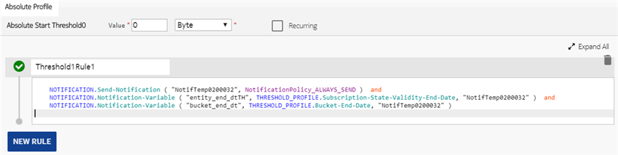
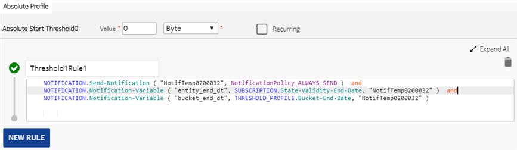

This section describes the threshold and lifecycle related notification variables configured under the VariableValue attribute of the Notification-Variable action of a rule. For each variable pair (VariableName and VariableValue), a dedicated Notification-Variable action must be configured.
Once the notification variables are configured for a bucket or counter entity and threshold is reached, a notification message is sent to the Notification Server along with these variables. These variables are defined within the text field of a given notification template on the Notification Server and they are replaced during the runtime with the dynamic values of these variables before sending the notification text to the users over SMS or emails as defined in the notification profile of a device.
 Note:
Note:Threshold notification variables
Notifications are sent to users when a threshold level is reached or exceeded. The Notification Server supports the dynamic variable parts, which can be combined with the static text defined in the notification template within the Notification Server. The operators configure the dynamic variable notification in the threshold levels applied to any resource.
The custom data from a device or group is also available as notification variable.
 Notice:
Notice:|
Attribute |
Source Context |
Applicable for resources |
Description |
|---|---|---|---|
| Account-Def-Name | THRESHOLD_PROFILE | Account | Displays the account ID for which the threshold value is defined which further triggers a notification. |
| Account-Current-Value | THRESHOLD_PROFILE | Account | Displays the account value with reservation (current value of the account). |
| Account-End-Date | THRESHOLD_PROFILE | Account | Displays the end date of periodic lifecycle attached with account. |
| Account-Entity-End-Date | THRESHOLD_PROFILE | Account | Displays the end date of entity lifecycle attached with account. |
| Account-Unused-Value | THRESHOLD_PROFILE | Account | Displays the unused account value or the current account value without reservation. |
| Action-Type | THRESHOLD_PROFILE | Account, AV, Bucket, Counter |
Displays the actions configured for the threshold. Only some specific actions are considered for this parameter, such as:
Note: |
| AV-Initial-Value | THRESHOLD_PROFILE | AV - All types | Displays the AV initial value. |
| AV-Current-Value | THRESHOLD_PROFILE | AV - All types | Displays the AV value with reservation (current value of the AV). |
| AV-Unused-Value | THRESHOLD_PROFILE | AV - All types | Displays the AV value without reservation (unused value of AV). |
| AV-Def-Name | THRESHOLD_PROFILE | AV | Displays the aggregate view name. |
| Account-Id | SUBSCRIPTION | Account | Displays the account ID of the subscription used in the call, which can also be mapped to a custom data defined in the device. |
| Bucket-Current-Value | THRESHOLD_PROFILE | Bucket |
Displays the current value of bucket with reservation. Note: |
| Bucket-Def-Name | THRESHOLD_PROFILE | Bucket | Displays the bucket ID for which the threshold value is defined that triggers a notification. |
| Bucket-Or-Counter-Def-Name | THRESHOLD_PROFILE | Bucket, Counter | Displays the ID of a bucket or counter for which the notification has to be sent. |
| Bucket-End-Value | THRESHOLD_PROFILE | Bucket |
Displays the initial minus current, which refers to the bucket value that has been used till date. If a threshold has not been reached, then there is no notification with notification variables. Note: |
| Bucket-End-Date | THRESHOLD_PROFILE | Bucket | Displays the Bucket Expiration Time received from the subscription of that bucket. |
| Bucket-Balance-Value | THRESHOLD_PROFILE | Bucket | Displays the remaining value of the bucket after committing the used quantities reported in USU, which refers to (Initial bucket value) - committed (USU in SCUR-U/T). |
| Bucket-Initial-Value | THRESHOLD_PROFILE | Bucket | Displays the initial bucket value. |
| Bucket-Or-Counter-Current-Value | THRESHOLD_PROFILE | Bucket, Counter | Displays the bucket or counter current value whatever is available. |
| Bucket-Unused-Value | THRESHOLD_PROFILE | Bucket | Displays the unused bucket value or the current value of bucket without reservation. |
| Bucket-Current-Step | THRESHOLD_PROFILE | Bucket | Displays the current step of a step bucket, which is null for a normal bucket. |
| Bucket-StepUp-Time | THRESHOLD_PROFILE | Bucket | Displays the last step up time of step bucket, which is null for a normal bucket. |
| Bucket-StepUp-Value | THRESHOLD_PROFILE | Bucket | Displays the cumulative value of top-up done at a particular time in a slice, which is null for a normal bucket. |
| Bundle-Id | SUBSCRIPTION | Subscription | Displays the bundle ID of the subscription. |
| Bundle-Name-Reserve | THRESHOLD_PROFILE | Counter | Displays the bundle name that contains the charging service, which has contributed more in reservation when a threshold is attached with the counter. |
| Bundle-Reserve-Type | THRESHOLD_PROFILE | Counter | Displays the device or group name containing the bundle, which has contributed more in reservation when the Threshold is attached with counter. |
| Carry-Over-Bucket-Current-Value | THRESHOLD_PROFILE | Bucket | Displays the carry over current value of bucket with reservation. |
| Carry-Over-Bucket-End-Date | THRESHOLD_PROFILE | Bucket | Displays the carry over Bucket Expiration Time that comes from subscription of that bucket. |
| Charging-Service | THRESHOLD_PROFILE | Account, Bucket, Counter |
Displays the name of the charging service. It can also be mapped to a custom data with name, such as Segment defined in the device. |
| Charging-Service-Reserve | THRESHOLD_PROFILE | Counter | Displays the charging service name, which has contributed more in reservation. |
| Charging-Service-Reserve-Type | THRESHOLD_PROFILE | Counter | Displays the device or group name, which contains the charging service which has contributed more in reservation. |
| Counter-Current-Value | THRESHOLD_PROFILE | Counter |
Displays the current value of a counter. For example: THRESHOLD_PROFILE.Counter-Current-ValueNote:For example, if Usage Limit is 10 GB and Overage Limit is 1 GB with threshold notification configured on 100% usage, and Counter-Current-Value jumps from 10 GB to 12 GB, then threshold notification has the following two notifications:
|
| Counter-CurrentValue |
SPR_GROUP SPR_DEVICE SUBSCRIPTION |
Counter |
Displays the current value of a provided counter. For example, consider a group has two counters GC1 and GC2. A threshold is attached to counter GC1. Therefore, in the notification of threshold attached to counter GC1, we can configure to send another counter GC2 as well. SPR_GROUP.Counter-CurrentValue ( "<Counter-Def-Name>" ) SPR_DEVICE.Counter-CurrentValue ( "<Counter-Def-Name>" ) SUBSCRIPTION.Counter-CurrentValue ( "<Counter-Def-Name>" )wherein Counter-Def-Name is GC1 and GC2. |
| Counter-Def-Name | THRESHOLD_PROFILE | Counter | Displays the counter name for which the threshold value is defined that triggers a notification. |
| Counter-End-Date | THRESHOLD_PROFILE | Counter |
For subscription counter, the counter end date is the end date of the subscription to which the counter is linked. For device counter, group counter, and device group counter, the counter end date is taken from the account linked to the subscription. Note:For example: THRESHOLD_PROFILE.Counter-End-Date |
| Counter-EndDate |
SPR_GROUP SPR_DEVICE SUBSCRIPTION |
Counter |
Displays the counter end date. For subscription counter, the counter end date is the end date of the subscription to which the counter is linked. For device counter, group counter, and device group counter, the counter end date is taken from the account linked to the subscription. Note:For example, consider a group has two counters GC1 and GC2. A threshold is attached to counter GC1. Therefore, in the notification of threshold attached to counter GC1, we can configure to send another counter GC2 as well. SPR_GROUP.Counter-CurrentValue ( "<Counter-Def-Name>" ) SPR_DEVICE.Counter-CurrentValue ( "<Counter-Def-Name>" ) SUBSCRIPTION.Counter-CurrentValue ( "<Counter-Def-Name>" )wherein Counter-Def-Name is GC1 and GC2. |
| Counter-End-Value | THRESHOLD_PROFILE | Counter |
Displays the maximum limit value stored in a counter. This is an absolute value of the counter threshold corresponding to the Notification-Stop, Notification-Reject, and Reject actions. Note: |
| Counter-Overage-Count | THRESHOLD_PROFILE | Counter |
As overage limit blocks keep on repeating multiple times, this attribute provides the count of the ongoing overage block. For example, if usage limit is 5 GB, overage limit is 2 GB, and Counter-Current-Value is 9.5 GB, then this attribute gives 3 depicting third overage block, which is ongoing. Note:For example, if Usage Limit is 10 GB, Overage Limit is 1 GB with threshold notification on 100% usage, and Counter-Current-Value jumps from 10 GB to 12 GB in a call, then threshold notification for overage count is 1 (on 11 GB usage) and Counter-Overage-Count is 2 (on 12 GB usage). |
| Counter-Overage-Limit | THRESHOLD_PROFILE | Counter | Displays the overage limit in the counter instance. |
| Counter-Reset-Timestamp | THRESHOLD_PROFILE | Counter | Displays the last reset time of the counter instance. |
| Counter-Threshold-Percentage | THRESHOLD_PROFILE | Counter |
If the percentage threshold is being executed, then this attribute contains the percentage threshold value. For example, if threshold is applied at 90%, then this attribute value is 90. Note: |
| Counter-Update-Timestamp | THRESHOLD_PROFILE | Counter | Displays the value when a counter instance was updated by create/update/delete/read operation or BCR, such as, Last Admin Update or Billing Cycle Timestamp. |
| Counter-Usage-Limit | THRESHOLD_PROFILE | Counter | Displays the prorated usage limit in the counter instance. |
| Current-Overage-Usage | THRESHOLD_PROFILE | Counter |
If the overage limit is specified, then current usage in ongoing overage block is calculated as: Current counter value – (Usage limit + (Overage limit * (overage count - 1))) For example, if Usage Limit is 5 GB, Overage Limit is 2 GB, and Counter-Current-Value is 9.5 GB, then this attribute value is 0.5 GB. If no overage limit is defined, then this attribute value remains 0. Note:For example, if Usage Limit is 5 GB and Overage Limit is 1 GB with threshold notification configured on 50% and 100% usage, and also Counter-Current-Value jumps from 10 GB to 12.5 GB in a call, then the threshold notification has three notifications:
|
| Current-Used-Value | THRESHOLD_PROFILE | Bucket, Counter | The amount used towards the threshold in bucket. For counter, it indicates the amount used towards the threshold in counter. |
| delta-To-Next-Threshold | THRESHOLD_PROFILE | Bucket, Counter |
The delta value to next threshold, that is, the difference between a counter current value and upcoming Threshold value. Note: |
| description | SUBSCRIPTION | Subscription | Displays the description of the subscription. |
| E164 | SPR_DEVICE | Account | The MSISDN value or device that triggers the notification. The variable is the E.164 number configured in the device. |
| First-Reserve-Rate | THRESHOLD_PROFILE | Resource based Counter | Displays the Rate ID which is associated with the entity that is first used in reservation. |
| Last-Update-Timestamp | THRESHOLD_PROFILE | Bucket, Counter | The value when a counter/bucket was updated by any method. For example, CRUD operation or BCR, that is, Last Admin Update or Billing Cycle Timestamp. |
| Notification-Generation-Timestamp | THRESHOLD_PROFILE | Account, Bucket, Counter | The Unix timestamp when the notification is generated. This is the current time period in seconds. |
| Notification-Generation-Timestamp-Millis | THRESHOLD_PROFILE | Account, Bucket, Counter | The time when the notification is generated for a counter. It refers to the last three digits or milliseconds of the Unix timestamp. |
| Notification-Event | CALL_COMMON | Account, Bucket, Counter, AV (All types) | Displays the notification event. |
| Overage-Allowance | THRESHOLD_PROFILE | Account | Displays the overage allowance limit. |
| Overage-Flag | THRESHOLD_PROFILE | Account | Displays the flag to identify whether the current threshold is on account overage value. |
| Overage-Value | THRESHOLD_PROFILE | Account | Displays the overage value of an account to which a threshold is attached. |
| Reserve-Rate | THRESHOLD_PROFILE | Resource based Counter | Displays the Rate ID which is associated with the entity for which maximum reservation has taken place. |
| Reserve-Entity-Name | THRESHOLD_PROFILE | Counter | Displays the name of entity from which maximum reservation has taken place. |
| Reserve-Entity-Type | THRESHOLD_PROFILE | Counter | Displays the type of entity from which maximum reservation has taken place, and this can have one of the 3 values; BUCKET, ACCOUNT, or NOCHARGE. |
| Subscription-State-Validity-End-Date | THRESHOLD_PROFILE |
Subscription, Subscription counter |
Displays the end date of entity lifecycle attached with the subscription. This value is null when there is no time configured in the entity lifecycle state. Note:(In this case, the date format of end time depends how the notification template is configured.) |
|  | |||
| State-Validity-End-Date | SUBSCRIPTION |
Subscription Subscription counter |
Displays the end date of entity lifecycle attached with the subscription. This value is null when there is no time configured in the entity lifecycle state. Note:(In this case, the date format of end time depends how the notification template is configured.) |
|  | |||
| Threshold-Compute-Recurrence-Count | THRESHOLD_PROFILE | Account, Bucket, Counter, AVCounter, AV | If a threshold is recurring, then it is recurrence value in the threshold-crossed action. |
| Threshold-Crossing-Value | THRESHOLD_PROFILE | Account, Bucket, Counter, AVCounter, AV | The value at which the threshold is crossed. |
| Threshold-Current-Absolute-Value | THRESHOLD_PROFILE | Bucket, Counter | The current value of the counter or bucket with reservation. |
| Threshold-Current-Percentage-Value | THRESHOLD_PROFILE | Bucket, Counter | The percentage value of a current value of bucket, or 100 for a counter. |
| Threshold-Is-Crossed | THRESHOLD_PROFILE | Account, Bucket, Counter, AVCounter, AV | Displays the value as True if a threshold is exceeded; otherwise, displays the value as False. |
| Threshold-Percentage | THRESHOLD_PROFILE | Bucket, Counter |
Buckets can have threshold percentage value. For absolute threshold, the Percentage of absolute limit is calculated. This means if the threshold level is set to 900 and the bucket initial value is 1000, then it is 90 percent in the notification. |
|
Counters can only have threshold as absolute start type. To calculate the percentage of the absolute limit, the maximum limit value of counter is the one which has threshold defined with action Notification-stop/Notification-Reject, and Reject. Example: Two thresholds of absolute start of 900 MB and 1000 MB are defined in a counter with action Notification-send and Notification-stop/Notification-Reject respectively. In this case, the threshold percentage is calculated as 90% and 100%. |
|||
| Threshold-Profile-Compute-Interval | THRESHOLD_PROFILE | Account, Bucket, Counter, AV (All types) | Displays the threshold interval value for the Threshold-Profile-Interval-Count. |
| Threshold-Profile-Interval-Count | THRESHOLD_PROFILE | Bucket, Counter | Displays the current interval number, before the call. |
| Threshold-Recurrence-Count | THRESHOLD_PROFILE | Account, Bucket, Counter, AVCounter, AV | Displays the number of times the threshold has been crossed. For non-recurring thresholds, this must always be 0. |
| Threshold-Value | THRESHOLD_PROFILE | Account, Bucket, Counter, AVCounter, AV | Displays the value on which threshold is defined. |
| Total-Overage-Usage | THRESHOLD_PROFILE | Counter |
Displays the total usage in overage blocks when the overage limit is specified. The total overage usage is calculated as (Current-Counter-Value - Counter-Usage-Limit). For example, if Usage Limit is 5 GB, Overage Limit is 2 GB, and Current-Counter-Value is 8.5 GB, then this attribute calculates the total usage in overage block, which means 3.5 GB. If no overage limit is defined, then this attribute value remains zero. Note:For example, if Usage Limit is 5 GB and Overage Limit is 1 GB with threshold notification configured on 50% and 100% usage, and also Counter-Current-Value jumps from 10 GB to 12.5 GB in a call, then the threshold notification has three notifications:
|
|
3. On 50% consumption of third overage block (current), which means on 12.5 GB usage, with Counter-Current-Value as 12.5 GB, Total-Overage-Usage as 2.5 GB and Counter-Overage-Count as 3. |
|||
| Unit-Of-Remaining-Allowance | THRESHOLD_PROFILE | Account, Bucket |
Displays the type of unit for a bucket or account. Note: |
| Used-Service-Units | CALL_COMMON | Account, Bucket, Counter, AV (All types) | Displays the reported units in CCR from CCR-U/T. |
The Bucket Current Value or Counter Current Value within the variables are sent in the base unit to their type as follows:
-
For Volume type, the value is sent in bytes.
-
For Time type, the value is sent in seconds.
-
For Unit type, the value is sent in absolute value of units.
-
For Money type, the value is sent with precision. For example, 1234.56.
Lifecycle notification variables
The custom data from a device or group is also available as notification variable.
|
Attribute |
Source Context |
Applicable for entity |
Description |
|---|---|---|---|
| Creation-Time | SUBSCRIPTION | Subscription | Displays the creation time of a subscription. |
| description | SUBSCRIPTION | Subscripton | Displays the description of a subscription. |
| From-State | LIFECYCLE | Account, Subscription, Device, Group | Displays the current state of a subscription or account. |
| IMSI | SPR_DEVICE | Account, Subscription, Device, Group | Displays the IMSI of the device for which a notification is sent. |
| Next-Validity-Time | LIFECYCLE | Account, Subscription, Device, Group | Displays the new validity time of a subscription or account. |
| Old-Validity-Time | LIFECYCLE | Account, Subscription, Device, Group | Displays the old validity time of a subscription or account. |
| Start-Time | SUBSCRIPTION | Account, Subscription, Device, Group | Displays the start time of a subscription. |
| To-State | LIFECYCLE | Account, Subscription, Device, Group | Displays the state to which a subscription or account transitions. |